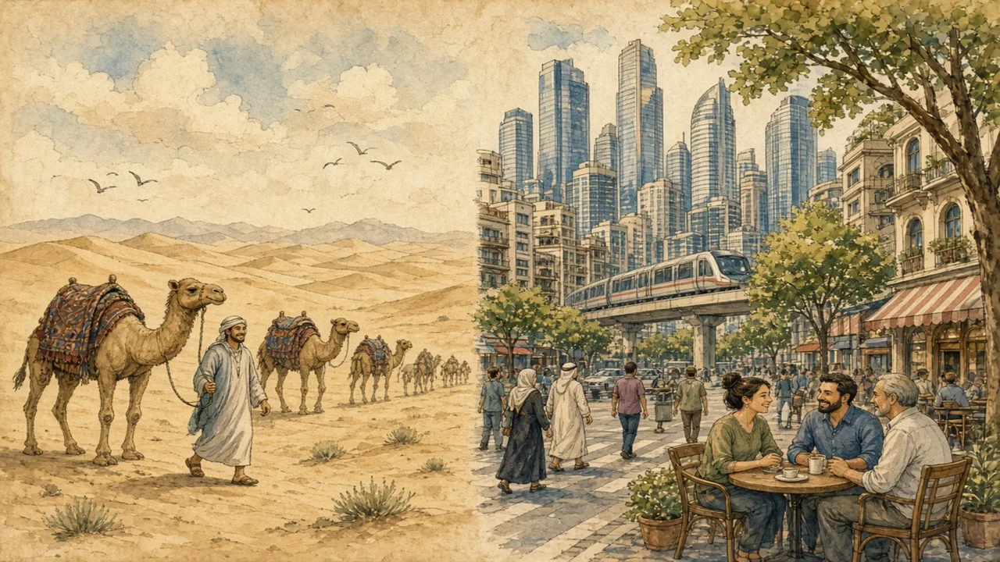

The Sahara is huge — but most people in the region live in cities with metros, malls and traffic jams.
Middle East and North Africa · Land & cities · Lesson 2 of 7
🌍 World map · ← Around the World: Middle East and North Africa · 🌱 Easier version (A2) · ← “Everyone Speaks Arabic” — Or Do They? · Guests, Tea and Dates: What Hospitality Really Means →

Each new word is hidden in a sentence. Read it aloud and say what you think the bold word means from the rest of the sentence — then reveal it and see how close you were.
Read each part. After it, there's a quick comprehension check (try the questions from memory first), then one thing to discuss.
The Sahara is the largest hot desert in the world, about the size of the United States, and the Arabian Peninsula has huge deserts too. However, large areas of the region are mountains, fertile valleys and coastline. In Egypt, most people live on a thin strip of land along the Nile, whereas the great desert on either side is almost empty. Wherever there is water, there is a settlement.
1. How big is the Sahara?
2. Where do most people in Egypt live?
1. About the size of the United States.
2. Along the Nile.
About two out of three people in the region live in cities, and in Gulf countries such as Qatar and Kuwait the figure is above ninety per cent. Cairo is one of the biggest cities in Africa, with more than twenty million people in its wider area. Istanbul, Tehran and Casablanca are huge too. Dubai opened a driverless metro in 2009, although just a few decades before, much of the area was desert, fishing villages and pearl diving.
1. What share of people in the region live in cities?
2. What opened in Dubai in 2009?
1. About two out of three.
2. A driverless metro.
For thousands of years, nomadic Bedouin communities moved with their camels, sheep and goats from one pasture to another, and they were important to trade and desert survival. Today, only a small minority still follow this way of life, and many of those combine herding with phones, trucks and seasonal work in towns. Despite this, desert culture remains a strong part of identity, poetry, food and music, even for people who have never slept in a tent.
1. Who are the Bedouin?
2. What remains strong despite the change?
1. Nomadic communities who herd animals across the desert.
2. Desert culture in identity, poetry, food and music.
A stereotype and the reality rarely match. This lesson's grammar gives you the structure to describe the difference.
Complete each sentence about this topic.
1. the Sahara is huge, most people live near water. (Although / Despite)
2. Cairo is crowded, the desert is almost empty. (whereas / despite)
3. the heat, the city has a metro. (Despite / Although)
1. Although
2. whereas
3. Despite
1. Few people live in the desert. , many people visit it. (However / Despite)
2. traditions change, desert poetry is still popular. (Although / Despite)
3. Some families live in tents, others live in apartment towers. (whereas / however)
1. However
2. Although
3. whereas
Hold on to this — you'll need it in the Speak tab.
The image of camels and tents comes partly from travel writing and film, which prefer an “empty” landscape to a crowded city. It also keeps an old tradition alive in the imagination. But a picture of the region with only camels is like a picture of Europe with only castles: true for a tiny part, and wrong for daily life. The honest picture has both — and also the farms, ports and suburbs in between.
This is the heart of the lesson — do all of it out loud. The timer is there to keep you going: fill the time with detail rather than escaping it.
Explain why “everyone lives in the desert” is a stereotype, as if to a friend who plans a first trip. Move through the arc: the Sahara and the rest → cities old and new → nomads today.
Use today's grammar at least three times, and work in at least five key words (dune, caravan, urban, skyline, irrigation, pasture, metro, settlement).
“Tourist pictures of a country should always show daily life, not only traditions.” Discuss.
Tell a story from your own world — work, family, the news — that connects to this topic. Stuck for an idea? Pick one of these and run with it:
🌍 World map · ← Around the World: Middle East and North Africa · 🌱 Easier version (A2) · ← “Everyone Speaks Arabic” — Or Do They? · Guests, Tea and Dates: What Hospitality Really Means →